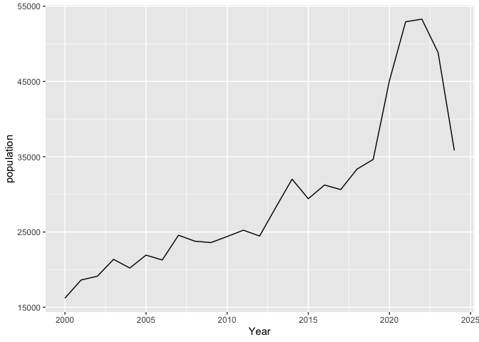

The goal of grasslandbirds is to provide an analysis and a comparison of the population of grassland birds in North America, with the production rate of various livestock and crops. The population data is based on various grassland bird species that were recorded within the Project Feederwatch survey (2000 - 2024). The production rate, is taken from the Food and Agriculture Organisation of the United Nations (FAO), the data shows the amount of livestock and crops that were produced (in tonnes) in North America.
Installation
You can install the development version of grasslandbirds from GitHub with:
remotes::install_github("ETC5523-2024/assignment-4-packages-and-shiny-apps-rwer0002")Example
This is a basic example which shows you how to plot the grassland bird population:
library(grasslandbirds)
library(tidyverse)
#> ── Attaching core tidyverse packages ──────────────────────── tidyverse 2.0.0 ──
#> ✔ dplyr 1.1.4 ✔ readr 2.1.5
#> ✔ forcats 1.0.0 ✔ stringr 1.5.1
#> ✔ ggplot2 3.5.1 ✔ tibble 3.2.1
#> ✔ lubridate 1.9.3 ✔ tidyr 1.3.1
#> ✔ purrr 1.0.2
#> ── Conflicts ────────────────────────────────────────── tidyverse_conflicts() ──
#> ✖ dplyr::filter() masks stats::filter()
#> ✖ dplyr::lag() masks stats::lag()
#> ℹ Use the conflicted package (<http://conflicted.r-lib.org/>) to force all conflicts to become errors
analysis_data %>%
ggplot(aes(x = Year, y = population)) +
geom_line()
Moreover, an interactive online app for this data can be deployed by using the launch_app function, within the package.